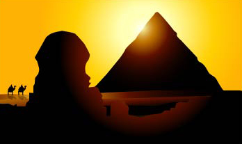
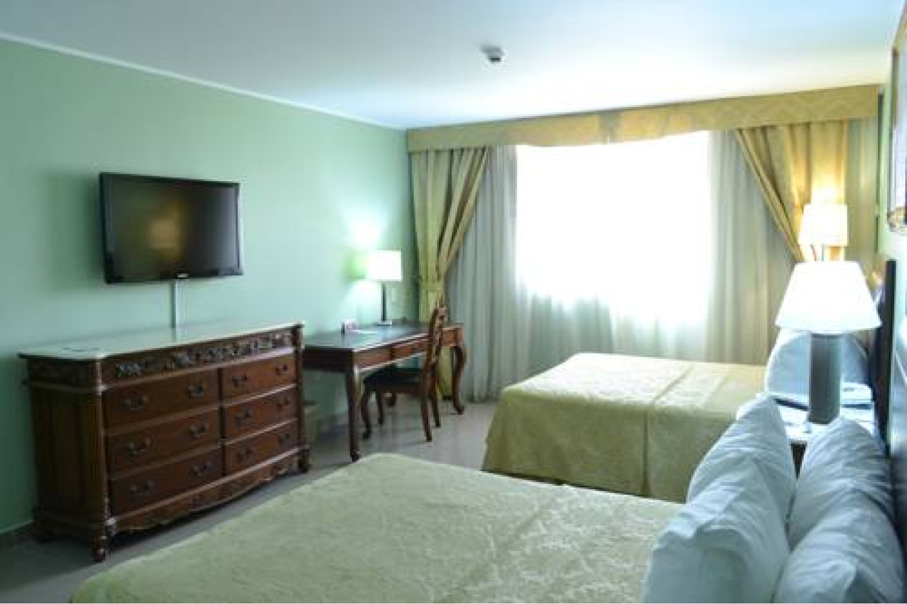

Reserva yá
Reserva yá

¿Estás listo para vivir una experiencia inolvidable en Curaçao? Podemos ayudarte a planear las mejores vacaciones de tu vida en esta isla caribeña escondida pero cautivadora. Las posibilidades son ilimitadas. ¡Empieza a planear hoy mismo!
Curazao, es un territorio autónomo del Reino de los Países Bajos con superficie de 444 km².
Está situado en el sur del mar de las Antillas, a unos 50 km de la costa noroccidental de Venezuela, y pertenece al grupo de las islas de Sotavento, junto con sus islas vecinas de Aruba y Bonaire.
Hasta 2010 formó parte de las Antillas Neerlandesas. Su capital y localidad más poblada es Willemstad, ubicada al sur de la isla
El origen del nombre Curazao:
Cuando los portugueses llegaron a la isla, vieron que los marineros que padecían escorbuto se curaron tras desembarcar, seguramente gracias a la gran cantidad de frutas que consumieron.
Por ello, bautizaron la isla como Ilha da Curação (en portugués, «Isla de la Curación»). Tras la conquista neerlandesa el nombre quedó finalmente como Curaçao.
Fuente: https://es.wikipedia.org/wiki/Curazao
La Organización de las Naciones Unidas para la Educación, la Ciencia y la Cultura (UNESCO) está comprometida a preservar la cultura y el patrimonio de las grandes ciudades del mundo y el listado de lugares catalogados como Patrimonio Mundial más reciente incluye sitios como: las Pirámides de Egipto, la Gran Barrera de Coral en Australia, el Serengueti al oriente de África y Willemstad en Curaçao.
En 1997, el comité del Patrimonio Mundial de la UNESCO escogió este centro histórico (uno de tan solo seis sitios elegidos del Caribe) gracias a su “destacado valor e integridad que ilustra el crecimiento orgánico de una comunidad multicultural durante los últimos tres siglos, preservando en gran medida los elementos significativos”.
Para obtener más información visite: www.unesco.org




Nuestro plan
Incluye
Nuestro plan
NO incluye


Curazao ofrece infinidad de deportes y actividades:
siempre hay algo que hacer en esta isla.
Atrévase a unirse a nosotros, descubra los deportes acuáticos y otras actividades, juegue a vóleibol playa o practique SUP en la bahía Spaanse Water (Aguas Españolas).
Bucee y haga snorkel, móntese en una bicicleta de montaña y descubra el Christoffelpark o disfrute de un agradable paseo a caballo durante la puesta de sol.
Si le gustan los deportes terrestres, los deportes de equipo o si está buscando vivir una experiencia inolvidable con el equipo de deporte local, descubrirá que los isleños disfrutan de los deportes y siempre están encantados de aceptar un desafío.
Prepárese para todo lo que Curazao le puede para ofrecer e inspírese con estas historias.
Las vibrantes calles peatonales evocan un ambiente pintoresco, repleto de tiendas, cafés y terrazas convenientemente ubicados en una misma área. Paseándose por uno de los centros más hermosos en todo el mundo, usted descubrirá fantásticos sitios para tomarse fotos. Las vistosas calles y callejuelas de Punda, repletas de vida y color, lo llevan a algunas de las mejores tiendas de la isla, en donde encontrará una variedad de joyas, productos electrónicos, cosméticos, moda para damas y caballeros y suvenires de la isla.
¡Relájese en uno de los muchos cafés y terrazas, y disfrute de un desayuno, almuerzo, o cena, o de un refrescante coctel!. Todos los jueves en la noche, Punda se convierte en el escenario del famoso Punda Vibes. La misión del Punda Vibes es procurar que usted se enamore de nuestra “dushi” Punda. ¡Las actividades se organizan para garantizar una agradable noche de compras, música en vivo, excelentes shows locales y buena comida con sus familiares y amigos!. Punda también cuenta con una vibrante comunidad artística. En sus calles encontrará una variedad de murales e impresionantes tiendas de arte de artistas locales. La mayoría de las tiendas de arte están ubicadas en la calle Winsdtraat, mejor conocida como el Callejón Artístico.
El Fuerte Beekenburg (en neerlandés: Fort Beekenburg) (También conocido como El Castillo o Het Kasteel) es una fortaleza en Curazao en medio de la Bahía de Caracas (Caracasbaai) en las Antillas Menores.
El Fuerte Beekenburg fue construido en 1703 con el objeto de proporcionar una mejor defensa del área contra los ataques españoles.
Fue uno de los pocos lugares adecuados para acceder desde el mar a la tierra. Por lo tanto, se decidió construir una fortaleza para hacer inaccesible Willemstad a los enemigos.
El fuerte recibe nombre de Sir Brook entre 1701 y 1704 que coordinó la defensa de la ciudad. Durante el siglo 18, la fortaleza sufrió varios ataques de las tropas francesas y británicas.
En un determinado momento, los británicos trataron de eludir el fuerte usando la montaña adyacente. Sin embargo, esto causó tantos problemas y tomó tanto tiempo que el plan se suspendió y se decidió la retirada antes de que los holandeses hubiesen reunido sus tropas.
De 1800 a 1803 y desde 1807 hasta 1816 Curazao estuvo bajo breve ocupación de los británicos. Varias veces Fort Beekenburg fue atacado por piratas, sin éxito.
Esnórkel en Curazao y Buceo – Un Maravilloso Mundo de Posibilidades Acuáticas
Los buzos y practicantes del snórkel no pueden dejar de hablar de la belleza del mundo submarino de Curazao. Déjenme asegurarles que tenemos una buena razón. Nos gusta pensar que no hay lugar en el mundo que ofrezca tanta variedad de grandes playas para hacer submarinismo u oportunidades para disfrutar la belleza de la naturaleza del mar mientras práctica snórkel.
Curazao buceo y esnórkel comprende 40 áreas que incluyen 65 sitios individuales..
Mambo Beach Boulevard ofrece grandes tiendas y restaurantes. No son lugares tradicionales, pero hay marcas locales e internacionales para darse el gusto, comprar excelentes regalos, tratarse a un lindo almuerzo o hermosa cena en unos de nuestros restaurantes o tomar un trago en uno de nuestros cafés o bares.
Querrá zambullirse en el océano azul claro de Sea Aquarium Beach, ¡pero cómprese primero ese nuevo bikini! Siempre hay algo en el BLVD, cada hora del día.
Casi todas las playas de Curazao están diseminadas a lo largo de la calma y protegida costa suroeste, donde las aguas son calmas y limpias como un cristal. En algunas playas se cobra la admisión, algunas veces incluyendo una playera. A pesar de que no es común, ni una práctica aceptable, podrá ver visitantes europeas tomando el sol en topless. Por favor tome en cuenta que no está permitido por la ley, pero que es tolerado en muchas playas.
Ciudades de Operación:
https://matadornetwork.com/es/las-50-frases-sobre-viajes-mas-inspiradoras-de-todos-los-tiempos/